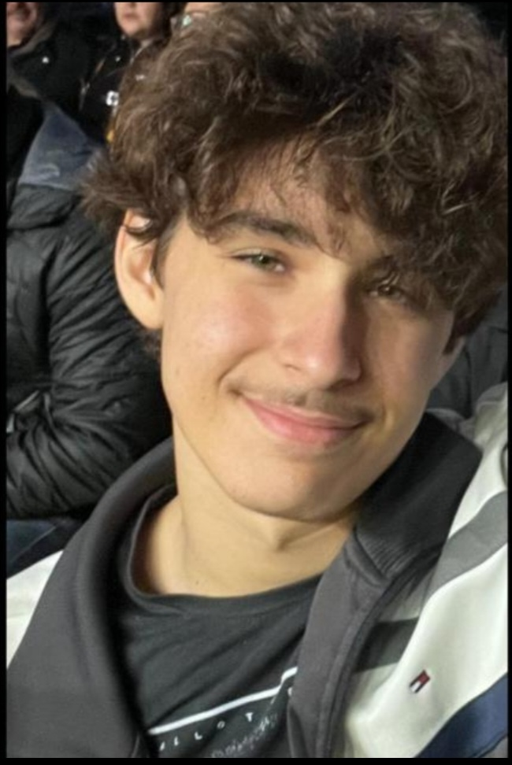

IF: AI ATTACKS
Uma aventura em um mundo onde a inteligência artificial ameaça o funcionamento da escola.
A Invasão ao Instituto e o Ataque da IA
Após uma revolução global liderada pelas Inteligências Artificiais, o mundo passou a ser governado por máquinas. Nesse cenário de resistência, um protagonista decide invadir as ruínas do Instituto Federal e eliminar a ameaça digital. Para isso, é preciso responder perguntas de informática, desviar e enfrentar drones malignos e alunos infectados com a IA!
Storyboard · clique para ampliar
- 1. Menu
- 2. Fases
- 3. Personagem principal
Entre no universo de IF: AI Attacks
Veja o jogo em ação e os desafios que o protagonista enfrenta.
Assistir ao vídeoAprenda a jogar
Três passos para começar a missão.
-
Controles
- ←→ouADMover
- EspaçoPular
- EnterAcessar o computador da fase (ou clique do mouse)
-
Combate
- Pule em cima dos drones e alunos infectados para derrotá-los
- Encostar neles tira vida
- 3 vidas. Sem elas, a fase reinicia
-
Como vencer
- Quiz: 4 alternativas, 1 correta
- Acertar abre o portão e salva o checkpoint
- Boss final: 5 vidas (contador de bateria)
- Colete todos os livros para libertar o instituto
Código em destaque
Trechos reais do jogo (GDScript) e do site (JavaScript e CSS). A linha-chave está destacada.
func sorteio() -> void:
var aleatorio := randi_range(1, 3)
if aleatorio == 1:
call_deferred("carregar_quizHard1")
elif aleatorio == 2:
call_deferred("carregar_quizHard2")
elif aleatorio == 3:
call_deferred("carregar_quizHard3")
func carregar_quizHard1() -> void:
get_tree().change_scene_to_file(cena_quizHard1)
func carregar_quizHard2() -> void:
get_tree().change_scene_to_file(cena_quizHard2)
func carregar_quizHard3() -> void:
get_tree().change_scene_to_file(cena_quizHard3)Sorteio de 1 a 3 escolhe qual dos três quizzes do tema da fase será carregado.
var quizzes := {
"fase1": {"hardware1": false, "hardware2": false, "hardware3": false},
"fase2": {"software1": false, "software2": false, "software3": false},
"fase3": {"redes1": false, "redes2": false, "redes3": false},
"fase4": {"ti_verde1": false, "ti_verde2": false, "ti_verde3": false},
}
var posicao_jogador := Vector2.ZERO
var posicao_salva := false
func marcar_correto(fase: String, quiz: String) -> void:
quizzes[fase][quiz] = true
func algum_quiz_correto(fase: String) -> bool:
return quizzes[fase].values().has(true)O Game State guarda a posição do jogador e os quizzes acertados, para a fase continuar de onde parou após o quiz.
const botaoTema = document.querySelector('#tema-toggle');
const elementoHTML = document.documentElement;
botaoTema.addEventListener('click', () => {
const novoTema = elementoHTML.dataset.theme === 'dark' ? 'light' : 'dark';
elementoHTML.dataset.theme = novoTema;
localStorage.setItem('tema', novoTema);
});
Ao clicar no botão, o JavaScript troca o atributo
data-theme da página e guarda a escolha
no localStorage para a próxima visita.
:root {
--cor-fundo: #1a1324;
--cor-bordo: #4b2a40;
--cor-verde: #0a5c3a;
--texto-principal: #f6f0f8;
}
:root[data-theme="light"] {
--texto-principal: #12121f;
}
body { color: var(--texto-principal); }As cores ficam em variáveis. No tema claro só redefinimos as que mudam, e o site inteiro acompanha.
Nossos Sprites
Os personagens e objetos do jogo. Use as setas ou os botões.
-

1. Personagem Principal Jogador
Documentação
-
Documentação Completa do Projeto
Planejamento, etapas de criação, tecnologias e decisões do projeto, reunidos em um único PDF.
Baixar PDF
Códigos-fonte
-
Código do Jogo
Explore os arquivos e a lógica de programação que dão vida ao IF: AI Attacks.
Ver no GitHub -
Código do Site
Consulte a estrutura HTML, os estilos CSS e os recursos JavaScript deste site.
Ver no GitHub
Nossa equipe
Conheça as pessoas que transformaram essa ideia em um projeto de tecnologia.
-
Aisha
Idealização do Tema & Desenvolvimento
Idealizou o tema do projeto e participou ativamente da programação, construção e implementação das funcionalidades do jogo.
-

Enzo
Design Gráfico
Responsável pela criação dos cenários e das artes/sprites que dão vida ao visual do jogo.
-
Felipe
Programação
Responsável por estruturar a lógica principal e dar vida ao funcionamento técnico da aplicação.
-

Gisselli
Desenvolvimento web
Responsável pelo visual e funcionamento do site, garantindo uma navegação moderna, intuitiva e atraente.
-
Grazielly
Idealização do Tema & Documentação
Idealizou a proposta do jogo e liderou a estruturação da documentação e relatórios técnicos do projeto.